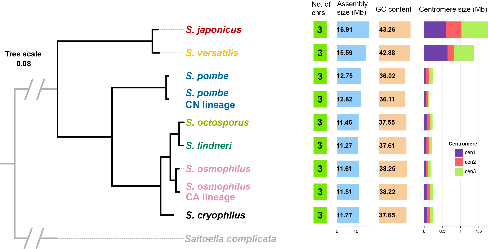

A total of 5400 SOGs have been defined based on the protein-coding genes in the genomes of the reference strains of S. pombe, S. pombe CN lineage, S. cryophilus, S. octosporus, S. lindneri, S. osmophilus, S. osmophilus CA lineage, S. japonicus, and S. versatilis.
Click the button below to access a searchable SOG table that provides entry to the sequence alignment, phylogenetic tree, synteny plot, and separate nucleotide sequences of CDSs and their 1-kb flanking regions (upstream and downstream) for each SOG.
Phylogenetic tree and summary statistics of the 9 genomes

Synteny plot of the 9 genomes